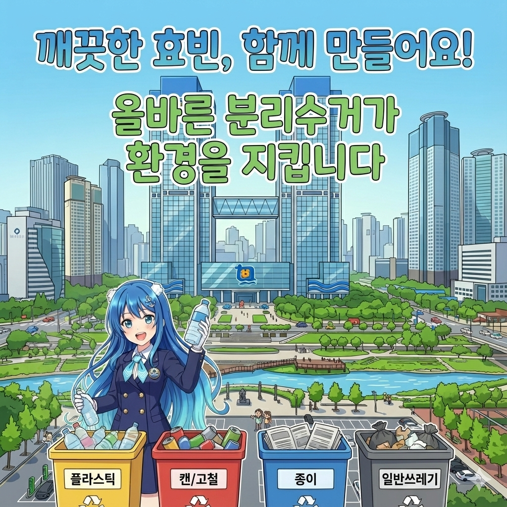

홈
효빈소개
홍보영상
홍보영상
효빈의 다이내믹한 오늘과 내일을 영상으로 만나보세요
효빈광역시청 대변인실에서 제작한 공식 홍보영상, 주요 시정 소식, 다채로운 축제 현장, 그리고 300만 시민과 함께하는 활기찬 일상을 생생한 영상으로 제공합니다.
효빈광역시 공식 유튜브 채널 '효빈 튜브'에서도 확인하실 수 있습니다.
최신 홍보영상

공식 홍보영상
2026 효빈광역시 공식 홍보영상
2026 효빈광역시 공식 홍보영상
"다이내믹 효빈, 새로운 르네상스"
03:45
152만 회
2026. 01. 01
 05:20
05:20
문화/축제(HAF)
제18회 효빈 애니메이션 페스티벌(HAF) 공식 애프터무비
85만 회
2025. 11. 15
 04:12
04:12
교통/인프라
새로운 지평을 열다: 도시철도 1호선 연장 및 7호선 전차 현대화 사업
32만 회
2025. 09. 20
 12:30
12:30
시민소통
[브이로그] 박효빈 시장의 일일 인턴 체험기: 종합민원실 편
110만 회
2025. 08. 05
 06:15
06:15
시정홍보
효빈항 제2국제여객터미널 개장: 아시아 해양 물류 허브로의 도약
15만 회
2025. 07. 12

03:00
캠페인
한바다 주무관과 함께하는 올바른 재활용 분리배출 캠페인
45만 회
2025. 06. 05
 08:45
08:45
문화/축제(HAF)
시민의 날 축제 스케치: 불꽃과 레이저로 수놓은 아름다운 밤
22만 회
2024. 10. 10
담당부서 : 대변인실 | 문의처 : 079-591-2015 | 책임자 : 뉴미디어홍보팀장
최종 업데이트 : 2026. 03. 30.
이 페이지에서 제공하는 정보에 대하여 만족하십니까?